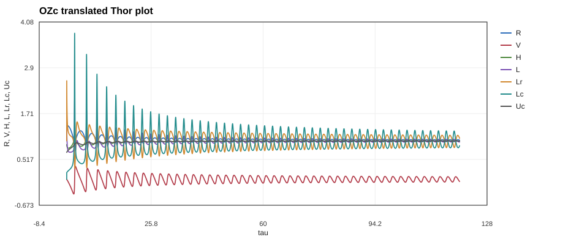
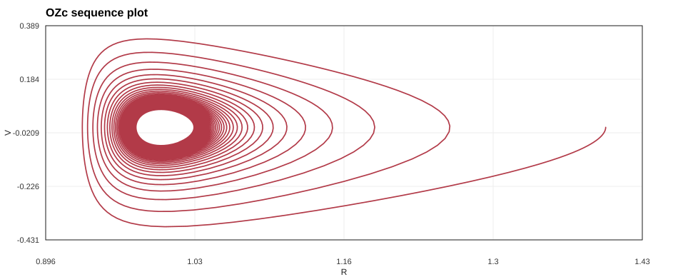

Symbol Guide
The table below collects the symbols used throughout the maintained
equations and CSV outputs. Historical note: the original S_Tran
sources used X for the integration time, Y[1]
for the old radius-like variable, and Y[3] for the old
pressure-like variable; preserved original sources keep that notation.
| Symbol | English name | Code name | Description |
|---|---|---|---|
| \(\tau\) | Time | tau |
Independent integration variable, measured in the model free-fall/dynamical time units. |
| \(R\) | Shell radius | R |
Dimensionless radius of the one-zone shell. |
| \(V\) | Shell velocity | V |
Dimensionless radial velocity, \(V=dR/d\tau\). |
| \(H\) | Nonadiabatic pressure factor | H |
Nonadiabatic pressure factor; this is not the total gas pressure. |
| \(U_c\) | Convective velocity | Uc |
Time-dependent convective velocity variable in OZC.S. |
| \(m\) | Equilibrium form factor | Mgeo |
Shell-thickness form factor \(m=3/(1-\eta^3)\), with \(\eta=R_c/R_0\). |
| \(\eta\) | Core radius fraction | Eta |
Dimensionless core radius fraction \(\eta=R_c/R_0\), with \(\eta^3=1-3/m\). |
| \(m_{\mathrm{eff}}(R)\) | Optional local form factor | Mvar() |
Source-code extension \(3/[1-(\eta/R)^3]\), used only when radius-dependent geometry is enabled. |
| \(\Gamma_1\) | Adiabatic exponent | G1 |
Equation-of-state exponent; the files set \(\Gamma_1=1.1\). |
| \(\Gamma_{11}\) | Reduced adiabatic exponent | G11 |
Convenience value \(\Gamma_{11}=\Gamma_1-1\). |
| \(n\) | Opacity density exponent | Nk |
Density exponent in the opacity convention \(\kappa\propto\rho^nT^{-s}\). |
| \(s\) | Opacity temperature exponent | Sk |
Temperature exponent in the opacity convention \(\kappa\propto\rho^nT^{-s}\). |
| \(B_1\) | Luminosity helper exponent | B1 |
Short-hand value \(B_1=(s+4)(\Gamma_1-1)\). |
| \(b(R)\) | Radiative radius exponent | Bvar() |
Exponent \(b=4+m_{\mathrm{eff}}(R)[n-B_1]\), giving \(L_r=R^{b(R)}H^{s+4}\). |
| \(q(R)\) | Pressure-force exponent | Qvar() |
Exponent \(q=m_{\mathrm{eff}}(R)\Gamma_1-2\), controlling the acceleration term \(H/R^{q(R)}\). |
| \(U\) | Inner luminosity exponent | U |
Exponent in the source term \(R^U\); both local S_Tran files use \(U=-1\). |
| \(\zeta\) | Thermal adjustment coefficient | Zeta |
Ratio of the model free-fall/dynamical time to the thermal time scale; it sets the \(H\)-adjustment rate per \(\tau\). |
| \(C_q\) | Turbulent dissipation coefficient | Cq |
Coefficient of the cubic damping term \(-C_q V^3\) in the acceleration equation. |
| \(c(R)\) | Convective luminosity radius exponent | Cvar() |
Exponent \(c=m_{\mathrm{eff}}(R)-2\), used in \(L_c=R^{-c(R)}U_c^3\). |
| \(d(R)\) | Convective velocity radius exponent | Dvar() |
Exponent \(d=m_{\mathrm{eff}}(R)(\Gamma_1-1)/2\), used in the convective velocity driver \(R^{-d(R)}D\). |
| \(\zeta_c\) | Convective adjustment coefficient | Zetac |
Ratio of the model free-fall/dynamical time to the convective adjustment time; it sets the \(U_c\)-relaxation rate. |
| \(\gamma_c\) | Convective luminosity fraction | Gammac |
Equilibrium convective luminosity fraction \(\gamma_c=L_{c0}/L_0\), used as the convective weight in the energy equation. |
| \(\gamma_r\) | Radiative luminosity fraction | Gammar |
Radiative fraction, \(\gamma_r=1-\gamma_c\). |
| \(L_r\) | Radiative luminosity | Lum() |
Radiative luminosity-like term \(L_r=R^{b(R)}H^{s+4}\). |
| \(L_c\) | Convective luminosity | Lumc() |
Convective luminosity-like term \(L_c=R^{-c(R)}U_c^3\). |
| \(L\) | Total luminosity | CSV column L |
Combined luminosity \(L=\gamma_rL_r+\gamma_cL_c\) in OZC.S. |
| \(\Delta\tau\) | Integrator step size | Step |
Adaptive time step used by 0MidPoint.s. |
| \(\mathrm{Err\_tol}\) | Error tolerance | Err_tol |
Optional tolerance used to shrink or grow the midpoint step. |
What The Files Do
OZ1.S
A three-variable radiative one-zone model. It evolves radius \(R\), velocity \(V\), and nonadiabatic pressure factor \(H\).
Source equations: OZ1.S, derivative definitions near lines 39-41.
OZC.S
A four-variable convective one-zone model. It adds convective velocity \(U_c\), radiative luminosity \(L_r\), convective luminosity \(L_c\), and a convective/radiative luminosity split.
Source equations: OZC.S, derivative definitions near lines 55-58.
The original S_Tran model files call 0MidPoint.s, a
second-order midpoint Runge-Kutta integrator with simple adaptive
step control. The Python scripts and interactive web app now default
to an adaptive Dormand-Prince RK45 method and run until the model is
classified as equilibrium or a stable limit cycle, with the requested
final time serving as a maximum cap. Midpoint is retained as
--solver midpoint and as an in-app comparison mode.
A DOP853 8(5,3) reference solver is also available as
--solver dop853.
Notation
| Symbol | Maintained field | Meaning |
|---|---|---|
| \( \tau \) | tau |
Independent integration variable scaled by the model free-fall/dynamical time. |
| \( R \) | R |
Dimensionless shell radius. |
| \( V \) | V |
Dimensionless radial velocity, \(V = dR/d\tau\). |
| \( H \) | H |
Nonadiabatic pressure factor. |
| \( U_c \) | Uc |
Convective velocity variable in OZC.S. |
Radiative Model: OZ1.S
OZ1.S evolves \(R\), \(V\), and \(H\). It uses
\(\zeta=1\) and a turbulent dissipation coefficient \(C_q=2\).
| Quantity | Value in OZ1.S |
|---|---|
| Initial radius | \(R(0)=1.2\) |
| Initial velocity | \(V(0)=0\) |
| Initial \(H\) factor | \(H(0)=0.8\) |
| Thermal coefficient | \(\zeta=1\) |
| Dissipation | \(C_q=2\) |
The CSV columns written by this model are
tau, R, V, H, L, where \(L=L_r\) after the initial row.
Convective Model: OZC.S
OZC.S adds convective transport. It defines
With \(\gamma_c=0.5\), \(\gamma_r=1-\gamma_c=0.5\), \(\zeta=1\), \(\zeta_c=1\), and \(C_q=1\), the literal S_Tran system is
OZC.S literally contains: sqrt(Y[2]), or
\(\sqrt{V}\). The printed Stellingwerf 1986 convective equation uses
\(\sqrt{H}\):
\[
\begin{aligned}
\frac{dU_c}{d\tau}
&=
\zeta_c\left(R^{-d(R)}\sqrt{H} - U_c\right).
\end{aligned}
\]
In ordinary real arithmetic, the literal \(\sqrt{V}\) version becomes
non-real whenever the velocity is negative.
| Quantity | Value in OZC.S |
|---|---|
| Initial radius | \(R(0)=1.4\) |
| Initial velocity | \(V(0)=0\) |
| Initial \(H\) factor | \(H(0)=0.9\) |
| Initial convective velocity | \(U_c(0)=0.7\) |
| Thermal coefficient | \(\zeta=1\) |
| Convective adjustment coefficient | \(\zeta_c=1\) |
| Convective luminosity fraction | \(\gamma_c=0.5\) |
| Radiative luminosity fraction | \(\gamma_r=0.5\) |
| Dissipation | \(C_q=1\) |
The CSV columns written by this model are
tau, R, V, H, L, Lr, Lc, Uc, where
\(L=\gamma_r L_r+\gamma_c L_c\).
Legacy Midpoint Integrator: 0MidPoint.s
The subroutine advances a system \(y' = F(\tau,y)\) using a centered second-order Runge-Kutta step. For a current state \(y_n\), time \(\tau_n\), and step \(\Delta\tau\):
Its adaptive error estimate compares the half-step delta \(k_1\) with half of the centered full-step delta \(k_2/2\):
If \(E > 10\,\mathrm{Err\_tol}\), the step is reset and retried with \(\Delta\tau/10\). Otherwise the next step is gently adjusted:
In the upgraded Python and TypeScript implementations, RK45 uses
the embedded Dormand-Prince 5(4) error estimate with relative and
absolute tolerances, and DOP853 uses the standard 8(5,3) tableau as
a higher-accuracy reference. The model-level stop condition looks
for either a flat equilibrium window or converged luminosity cycles.
The default limit-cycle requirement is five full cycles, represented
internally by six detected luminosity peaks. Use
--fixed-time to disable this early stability stop. The
midpoint equations above remain available for historical comparisons
and exact legacy-style runs.
Generated Plot Outputs
The Python translation in this directory writes CSV output and SVG plot files using the same data columns as the S_Tran/Thor workflow.

